초음파비파괴검사산업기사(구) (2002-03-10 기출문제)
1과목: 초음파탐상시험원리
1. 초음파탐상시험의 가장 큰 장점은?
- 침투력이 매우 높아 아주 깊은 곳의 결함검출이 용이하다.
- 표면 직하의 얕은 결함 검출이 쉽다.
- 재현성이 뛰어나며 기록보존이 용이하다.
- 내부 불연속의 위치, 크기, 방향 및 모양을 정확히 측정할 수 있다.
(정답률: 알수없음)

2. 5Q20N 수직탐촉자를 이용하여 두께 40mm인 시험체의 건전부 제1저면 에코 및 제2저면 에코의 크기가 각각 HB1 = 25dB , HB2 = 27dB일 때 산란에 의한 감쇠계수 α(dB/mm)는 얼마인가? (단, 반사 및 확산에 의한 손실은 무시할 정도로 적다.)
- 0.047
- 0.025
- 0.014
- 0.084
(정답률: 알수없음)
3. 초음파 빔의 반사각은?
- 입사각과 같다.
- 사용되는 접촉매질에 관계된다.
- 사용 주파수에 관계된다.
- 굴절각과 같다.
(정답률: 알수없음)
4. 초음파탐상시험시 공진법으로 두께를 측정할 때 다음 중 어떠한 현상을 이용하는가?
- 두께가 초음파 파장의 1/2일 때 초음파에너지가 증가
- 두께가 초음파 파장의 1/4이하일 때 초음파에너지가 손실
- 두께가 초음파 파장의 1/2일 때 초음파에너지가 손실
- 두께가 초음파 파장의 1/4이하일 때 초음파에너지가 증가
(정답률: 알수없음)
5. 초음파탐상시험시 의사지시를 유발할 수 있는 요인이 아닌 것은?
- 표면 조건(surface condition)
- 표면 형상(contoured surface)
- 가장자리 효과(edge effect)
- 원거리 음장효과(far-field effect)
(정답률: 알수없음)
6. 수침법으로 강(steel)과 알루미늄(aluminium)을 탐상할 때, 알루미늄과 비교했을 때 강에서 횡파의 굴절각은?
- 알루미늄에서보다 작다.
- 알루미늄에서보다 크다.
- 알루미늄에서와 같다.
- 입사각에 따라 다르다.
(정답률: 알수없음)
7. 다음은 결함검사를 위한 비파괴시험의 이용에 대해 기술한 것이다. 가장 올바른 것은?
- 결함검사는 대별하여 제작시와 사고시 2개의 시기에 대해 하여진다.
- 제작시의 검사에서 비파괴시험은 설계의 한가지 수단으로 행하여 진다.
- 사고시 검사의 주목적은 다음 검사기간까지 안전하게 사용 가능한지를 추정하고 평가하는 것이다.
- 수명평가를 위한 비파괴시험에는 결함의 종류, 형상, 크기, 위치, 방향 등을 가능한 한 정확히 구하는 것이 요구된다.
(정답률: 알수없음)
8. 재질의 두께가 투과된 연속 종파 파장의 1/2인 경우 일어나는 현상을 이용하여 시험체의 두께 측정에 사용하는 초음파탐상시험법은?
- 투과법
- 공진법
- 탠덤법
- 펄스에코법
(정답률: 알수없음)
9. 펄스 반복주파수에 관한 다음 설명중 맞는 것은?
- 펄스반복 주파수를 높게 하면 시험주파수를 높게 할 수 있다.
- 펄스반복 주파수를 높게 하면 브라운관상의 탐상도형이 어두워진다.
- 펄스반복 주파수를 높게 하면 잔류에코가 발생하기 쉽다.
- 펄스반복 주파수를 높게 하면 자동탐상속도를 빠르게 할 수 없다.
(정답률: 알수없음)
10. 초음파탐상시험의 탐상방법에 대한 설명 중 올바른 것은?
- 초음파탐상기 눈금판의 횡축은 초음파빔의 전파거리, 종축은 에코높이를 표시한다.
- 초음파탐상도형에 있어서 결함에코의 발생 위치로 부터 결함의 치수를 안다.
- 결함위치는 결함을 겨냥하는 방향을 바꾸어 에코높이 의 변화 모양으로부터 추정할 수 있다.
- 재료 중에서 초음파의 음속은 다중반사에 의한 저면 에코 높이의 저하 비율로부터 측정할 수 있다.
(정답률: 알수없음)
11. 초음파가 두 매질의 계면을 통과할 때 제 1매질이 제 2매질에 비해 음향 임피던스는 높으나 음속은 같을 때 굴절각은?
- 입사각을 넘는다.
- 입사각과 같다.
- 입사각보다 작다.
- 입사각보다 크다.
(정답률: 알수없음)
12. 비파괴검사의 이용 목적과 가장 관계가 먼 것은?
- 건전성 확보
- 제조기술의 개량
- 신뢰성의 향상
- 측정기술의 개선
(정답률: 알수없음)
13. 수침법으로 강을 초음파탐상시 강의 표면과 저면에서 진폭의 비율은? (단, 물의 음향임피던스 : 1.48x106㎏/m2.sec, 강의 음향임피던스 : 46.5x106㎏/m2.sec)
- 10%
- 13%
- 18%
- 24%
(정답률: 알수없음)
14. 초음파탐상기 CRT상에 나타난 지시를 이동시켜 송신펄스가 CRT화면 원점과 동일 지점에 오도록 조절하는 것을 무엇이라 하는가?
- 스윕길이(sweep length)
- 스윕지연(sweep delay)
- 리젝션(rejection)
- 필터(filter)
(정답률: 알수없음)
15. 매질내에서 입자의 운동이 파의 운동방향과 평행일 때 송신되는 파를 무엇이라 하는가?
- 종파
- 횡파
- 판파
- 표면파
(정답률: 알수없음)
16. 강재에 대한 굴절각이 60도인 경사각 탐촉자로 회주철을 검사할 때의 굴절각은 몇 도인가? (단, 강재에서의 횡파 속도는 3,200m/sec, 탐촉자 쐐기 재질의 종파속도는 2,800m/sec이고, 회주철에서의 횡파속도는 2,400m/sec이다.)
- 약 40도
- 약 49도
- 약 55도
- 약 70도
(정답률: 알수없음)
17. 다음은 비파괴시험의 안전관리에 대해 기술한 것이다. 올바른 것은?
- 방사선투과시험에서 취급하는 방사선이 그다지 강하지 않는 경우에는 안전관리에 특히 유의할 필요가 없다.
- 초음파탐상시험에서 취급하는 초음파가 강력한 경우에는 유자격자에 의한 관리, 지도가 의무화되어 있다.
- 형광자분이나 형광침투액을 이용하는 자분탐상시험이나 침투탐상에서 자외선조사등의 자외선이 눈에 직접 들어가도 전혀 해롭지 않다.
- 유기용제를 사용하는 침투탐상시험에서는 방화대책이나 환기 등의 안전관리에 특히 주의할 필요가 있다.
(정답률: 알수없음)
18. 초음파탐상시험과 관련하여 표면파에 대한 설명 중 맞는 것은?
- 재질의 전 두께에 걸쳐 진행하며 Lamb파라고도 한다.
- 약 한 파장 정도의 깊이를 투과하며 횡파 속도의 90%를 갖는다.
- 진동양식에 따라 대칭형과 비대칭형으로 나뉜다.
- 재질내 속도는 판두께 및 주파수에 의한다.
(정답률: 알수없음)
19. 경사각 탐상법에서 시편의 두께가 두꺼워지면 skip거리는 어떻게 되는가?
- 감소
- 불변
- 증가
- 2배 증가시 반으로 준다.
(정답률: 알수없음)
20. 보통의 경우 경사각 탐촉자에 아크릴 수지의 쐐기를 사용하는데 아크릴 수지를 사용하는 이유가 아닌 것은?
- 감쇠가 적다.
- 음향 임피던스값이 크다.
- 가공성이 좋다.
- 음속이 적절하므로
(정답률: 알수없음)
2과목: 초음파탐상검사
21. 용접부의 초음파탐상시험시 결함의 종류 판별에 영향을 주는 인자가 아닌 것은?
- 결함의 형상
- 결함의 위치
- 반사파의 크기
- 시험체의 두께
(정답률: 알수없음)
22. DAC는 무엇 때문에 생긴 신호의 손실을 보상하는 방법인가?
- 표면의 거칠기
- 시험체의 두께
- 탐상거리의 증가에 따른 감쇠
- 시험체 속에서의 음속
(정답률: 알수없음)
23. 단강품 탐상에서 시험주파수 선정시 고려해야 할 사항으로 올바른 설명은?
- 주파수가 높을수록 지향각이 크다.
- 주파수가 높을수록 산란에 의한 감쇠를 적게 받기 때문에 감쇠가 심한 재료나 두께가 두꺼운 재료에는 고주파수가 적당하다.
- 검출 가능한 결함의 최소 치수는 일반적으로 파장의 1/2 정도로 알려져 있다. 따라서 주파수가 높을수록 미소결함 검출에 적합하다.
- 주파수가 높을수록 분해능이 우수하며, 표면거칠기의 영향을 적게 받는다.
(정답률: 알수없음)
24. 초음파탐상검사에서 노치(Notch)란 매우 유용한 인공 대비 불연속이 될 수 있는데, 이는 다음 중 어떤 결함을 검출하는데 적합한 인공결함인가?
- 압연 강재에 있는 라미네이션
- 용접부 루트에 있는 용입 불량
- 용접부에 있는 기공
- 아크 스트라이크
(정답률: 알수없음)
25. 초음파 빔의 분산에 관한 설명중 옳은 것은?
- 분산각은 빔의 파장에 반비례한다.
- 분산각은 진동자의 직경에 비례한다.
- 분산각은 초음파의 주파수에 비례한다.
- 근거리 음장에서 빔의 분산은 고려하지 않는다.
(정답률: 알수없음)
26. 초음파탐상시험법의 분류중 진동방식에 의해 분류된 것이 아닌 것은?
- 경사각법
- 표면파법
- 펄스반사법
- 수직법
(정답률: 알수없음)
27. 경사각탐촉자의 주사법중 1탐촉자법에 해당되는 것은?
- 투과주사
- 탠덤주사
- K주사
- 목돌림주사
(정답률: 알수없음)
28. 시험편의 표면과 평행한 내부결함을 검출하는데 용이한 초음파탐상시험법은?
- 경사각 탐상법
- 수직 탐상법
- 탠덤(Tandem)법
- TOF(time of flight)법
(정답률: 알수없음)
29. 다음 중 진동자의 감도를 높이기 위한 방법으로 옳은 것은?
- 펄스폭이 작아야 한다.
- 펄스 지속시간이 짧아야 한다.
- 일반적으로 분해능이 좋아지면 감도가 높아진다.
- 펄스폭이 충분히 커야 한다.
(정답률: 알수없음)
30. 비파괴검사를 위한 결함과 비슷한 한개 이상의 드릴구멍을 포함하고 있는 금속 시험편을 무엇이라 하는가?
- 세정기 시편
- 수정 조사체
- 단일평면 각도 변환기
- 대비시험편
(정답률: 알수없음)
31. 단조품의 초음파탐상검사시 탐상감도를 결정하기 위해 고려해야 할 사항이 아닌 것은?
- 예상되는 결함의 위치와 형태
- 탐촉자의 주파수
- 탐상면의 거칠기 및 곡률
- 탐촉자 댐핑(damping)재의 재질
(정답률: 알수없음)
32. 음파와 전자파를 설명한 내용 중 틀린 것은?
- 음파는 전자파에 비해 속도가 느리다.
- 음파는 금속중에서 잘 진행된다.
- 음파는 전자파에 비해 파장이 길다.
- 전자파는 진공중에서 진행하지 못한다.
(정답률: 알수없음)
33. 다음 재료중 동일 거리에서 음향 감쇠가 가장 큰 것은?
- 단조품
- 원심주조품
- 압출품
- 냉간압연품
(정답률: 알수없음)
34. 화면을 표시하는 방법중 MA Scope 표시방법이란?
- 횡축에는 전파시간, 종축에는 에코의 크기를 나타내는 방법
- 탐촉자 위치를 횡축, 시간 또는 반사원의 깊이를 종축에 잡고 시험체의 단면을 표시하는 방법
- 탐상면 전체에 걸쳐 탐촉자를 주사하고 결함에코가 발생한 탐촉자 위치로 표시하는 방법
- 탐촉자를 특정방향으로 주사하였을 때 기본표시를 중 첩하여 하나의 도형으로 표시하는 방법
(정답률: 알수없음)
35. 초음파탐상기의 표시기(CRT)에 대한 설명으로 올바른 것은?
- 초음파탐상기의 표시기(CRT)상의 에코 초점은 게인조정 손잡이로 조정한다.
- 초음파탐상기의 표시기(CRT)에 나타나는 탐상도형으로부터 얻어진 정보는 결함까지의 거리와 에코높이이다.
- 초음파탐상기의 표시기(CRT)상에 나타난 에코높이를 2배로 하기 위해서는 게인조정기의 지시값을 2dB만큼 높인다.
- 초음파탐상기의 표시기(CRT)상에 나타난 에코높이를 1/10로 하기 위해서는 게인조정기의 지시값을 10dB만큼 낮춘다.
(정답률: 알수없음)
36. 다음 중 접촉매질의 특성이 아닌 것은?
- 시험물과 탐촉자 음향임피던스 사이의 적절한 음향임피던스를 가질 것
- 균일해야 하며 공기방울이나 고형 입자가 없을 것
- 시험물과 탐촉자에 해가 없을 것
- 적용하기는 용이하고 제거하기는 용이하지 않을 것
(정답률: 알수없음)
37. 그림과 같이 경사각법으로 검사를 실시했을 때 CRT에 나타나는 탐상도형은?
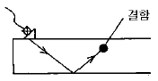
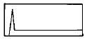
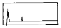
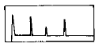
(정답률: 알수없음)
38. 다음 중 수정진동자의 초음파 분산각을 구하는 식은?
- sinø = 1/2 × 진동자 직경 × 파장
- sinø = 주파수 × 파장 ÷ 진동자 직경
- sinø = 주파수 × 파장
- sinø = 1.22 × 파장 ÷ 진동자 직경
(정답률: 알수없음)
39. 강 용접부에 표면파가 발생할 수 있도록 경사각탐촉자의 아크릴슈(Acryle shoe)를 설계할 때 입사각은 몇 도로 하여야 하는가? (단, 아크릴의 종파속도 CL = 2730m/sec, 강용접부의 횡파속도 Cs = 3230m/sec 이다.)
- 42 °
- 57.6°
- 36°
- 47°
(정답률: 알수없음)
40. 진동자 설계시 다음 중 최대의 감도를 갖는 경우는?
- 펄스폭이 크고 댐핑상수(δ)가 작아야 한다.
- 펄스폭이 작고 댐핑상수(δ)가 커야 한다.
- Q값과 대역폭이 작아야 한다.
- Q값은 작고 대역폭은 커야 한다.
(정답률: 알수없음)
3과목: 초음파탐상관련규격 및 컴퓨터활용
41. KS D 0250(강관의 초음파 탐상 검사방법)에서 요구하는 수침법에 사용하는 수직 탐촉자의 진동자 치수는 원칙적으로 지름이 얼마인 것으로 하여야 하는가?
- 1 - 5mm
- 10 - 20mm
- 20 - 30mm
- 30 - 40mm
(정답률: 알수없음)
42. ASME Sec. V Art.24 SA-388에 따라 초음파탐상검사를 실시할 때 탐촉자의 최대 주사 속도는?
- 4인치/sec
- 6인치/sec
- 8인치/sec
- 10인치/sec
(정답률: 알수없음)
43. ASME Sec.Ⅴ art.5에서 교정시험편은 시험할 주조품의 전살두께에 대해 사용하는 경우 ± 몇 %의 살두께를 갖는 것으로 제작되어야 하는가?
- 10
- 15
- 25
- 30
(정답률: 알수없음)
44. Window 환경에서 공유된 폴더를 사용하기 위한 방법이 올바른 순서로 나열된 것은?
- 네트워크 환경 → 컴퓨터 아이콘 → 공유 폴더 → 암호입력
- 컴퓨터 아이콘 → 네트워크 환경 → 암호 입력 → 공유폴더
- 네트워크 환경 → 암호 입력 → 컴퓨터 아이콘 → 공유폴더
- 네트워크 환경 → 암호 입력 → 공유 폴더 → 컴퓨터 아이콘
(정답률: 알수없음)
45. KS B 0831에 규정된 STB-G V8의 설명중 틀린 것은?
- 탐상면에서 표준구멍까지의 거리가 80mm이다.
- 시험편의 길이가 100mm이다.
- 표준구멍의 직경이 1mm이다.
- 표준구멍의 오차는 ± 0.1mm이다.
(정답률: 알수없음)
46. ASME Sec.Ⅴ Art.4에서 초음파탐상 장치의 펄스 반복율은 최대 주사속도에서 주사방향에 평행한 진동자 치수의 1/2을 이동하는데 걸리는 시간내에 적어도 몇 번 탐촉자에 펄스를 발생하기에 충분하여야 하는가?
- 1번
- 3번
- 6번
- 12번
(정답률: 알수없음)
47. KS 규격에 따라 두께 30mm의 알루미늄 합금판의 완전 용입 용접부의 A 스코프 표시 탐상기를 사용하는 펄스 반사법에 의한 초음파 경사각탐상시험을 하고자 한다. 이 때 적합한 진동자는?
- 5MHz, 10×10mm
- 1MHz, 10×10mm
- 5MHz, 20×20mm
- 1MHz, 20×20mm
(정답률: 알수없음)
48. 초음파 탐상용 G형 감도 표준시험편 중 인접한 시험편 V15-2 와 V15-2.8을 5MHz ø 20㎜ 탐촉자로 검정할때 표준홈 에코 높이의 차는 얼마 이내이어야 하는가?
- 2.4 ± 1 ㏈
- 5.7 ± 1㏈
- 15 ± 1 ㏈
- 4.8 ± 1 ㏈
(정답률: 알수없음)
49. ASME Sec. Ⅺ에서 검사표면 곡률 직경이 20" 이상인 용접부의 대비 시험편에 관한 설명으로 맞는 것은?
- 동일한 곡률직경을 갖는 시험편이나 평활한 보정시험편으로 사용할 수 있다.
- 동일한 곡률직경을 갖는 시험편이나 용접부의 0.9 ∼1.5 배의 곡률직경을 갖는 시험편을 사용한다.
- 동일한 곡률직경을 갖는 시험편이나 0.94" ∼20"까지의 표면 곡률직경을 갖는 시험편을 사용한다.
- 평활한 보정시험편으로 보정한 후 곡률직경이 7.2"∼12"인 시험편으로 재보정하여 사용한다.
(정답률: 알수없음)
50. KS B 0896에서 규정된 진동자치수가 20×20mm이고, 70° 일때 접근한계거리는?
- 25mm
- 30mm
- 15mm
- 18mm
(정답률: 알수없음)
51. KS B 0817에 따른 초음파탐상 장치의 성능 점검에 해당되지 않는 것은?
- 수시 점검
- 일상 점검
- 정기 점검
- 특별 점검
(정답률: 알수없음)
52. 아래 내용은 무엇에 대한 설명인가?
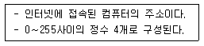
- 도메인 이름
- DNS
- LAN
- IP address
(정답률: 알수없음)
53. KS B 0831에 의해 A3형계 STB 표준시험편을 제작하여 점검할 때 합격 여부 판정 기준에 포함되지 않는 것은?
- 입사점 측정위치
- R 100면의 에코높이
- ø 4× 4mm 구멍의 에코를 최대로 얻을 수 있는 위치
- 굴절각 눈금
(정답률: 알수없음)
54. KS 규격에 의한 초음파탐상기 탐촉자의 일반적 표시방법으로 다음 중 순서가 맞는 것은?
- 주파수 → 진동자재료 → 진동자크기 → 형식 → 굴절각
- 굴절각 → 형식 → 진동자크기 → 진동자재료 → 주파수
- 진동자재료 → 주파수 → 진동자크기 → 형식 → 굴절각
- 주파수 → 굴절각 → 진동자재료 → 진동자크기 → 형식
(정답률: 알수없음)
55. 윈도우에서 선택된 폴더나 파일의 정보 및 속성을 볼 수 있는 명령은?
- 데스크 톱
- 아이콘 정렬
- 새로 만들기
- 등록 정보
(정답률: 알수없음)
56. ASME Sec.V에 따라 용접부에 대한 초음파탐상검사시 시스템 교정중에서 사각빔에 대한 교정시 측정해야 할 대상이 아닌 것은?
- 소인(sweep)범위 교정
- 각도 및 감도 교정
- 거리 - 진폭 교정
- 위치 교정
(정답률: 알수없음)
57. 거리에 관계없이 자료발생 즉시 처리하는 양방향 통신 기능을 가진 정보처리 방식은?
- 온라인(On-Line) 처리
- 일괄(Batch) 처리
- 원격 일괄(Remote batch) 처리
- 분산 자료 처리(distributed data processing)
(정답률: 알수없음)
58. KS B ⑤35에 의하여 경사각 탐촉자로 불감대를 측정할 때 STB-A2 시험편의 ø 4x4mm의 구멍을 겨냥하여 최대가 되는 에코 높이를 눈금판의 20%로 맞춘 후 몇 dB 감도를 높여야 하느냐?
- 6dB
- 10dB
- 14dB
- 20dB
(정답률: 알수없음)
59. 원자로 압력용기용 부품에 관해 초음파탐상검사를 실시하는 경우 다음 중 검사결과와 판정기준을 규정한 것은?
- ASME Sec.Ⅺ
- ASME Sec.VⅢ
- ASME Sec.V
- ASME Sec.Ⅲ
(정답률: 알수없음)
60. ASTM A-388의 규격을 적용할 수 있는 제품은?
- 단조강 - 봉 - 직경 2인치
- 주조니켈 - 판재 - 두께 4인치
- 용접연철 - 판재 - 두께 1인치
- 압연알루미늄 - 봉 - 직경 2인치
(정답률: 알수없음)
4과목: 금속재료 및 용접일반
61. 다음 중 점용접의 3대 요소가 아닌 것은?
- 전극의 재질
- 용접 전류
- 통전 시간
- 가압력
(정답률: 알수없음)
62. 비정질합금의 제조법이 아닌 것은?
- 화학도금
- 금속가스의 증착
- 냉간가공법
- 액체급냉법
(정답률: 알수없음)
63. 전위(dislocation)의 종류에 속하지 않는 것은?
- 나사전위
- 칼날전위
- 절단전위
- 혼합전위
(정답률: 알수없음)
64. 보기와 같은 용접홈 모양과 용접방향에 대한 (?) 부분에 도시될 용접기호로 가장 적합한 것은?
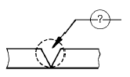
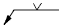
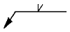
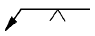
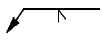
(정답률: 알수없음)
65. 다음 중에서 용접 지그(Jig)의 사용목적이 아닌 것은?
- 용접자세를 편리하게 한다.
- 용접이 곤란한 재료를 가능하도록 한다.
- 대량 생산을 하기 위하여 사용한다.
- 제품의 정밀도를 향상 시켜 준다.
(정답률: 알수없음)
66. 소결기계 재료에 대한 설명이 옳지 못한 것은?
- 재질은 철계분말이 주체이고 Cu, Sn, Pb 등의 분말을 배합한다.
- 배합된 재료는 산화성 분위기 중에서 연속식 전기로 에서 소결한다.
- 소결된 부품은 사이징, 코이닝 공정에서 정확한 치수를 맞춘다.
- 성형압의 증가에 따라 밀도, 강도 및 연신율이 함께 증가한다.
(정답률: 알수없음)
67. 원판형 전극사이에 용접물을 끼워 전극에 압력을 주면서 전극을 회전시켜 모재를 이동하면서 용접하는 방법으로 주로 기밀, 유밀을 필요로하는 이음에 적용되는 전기저항 용접법은?
- 심 용접법
- 플래시 용접법
- 업셋 용접법
- 테르밋 용접법
(정답률: 알수없음)
68. 용접결함 중 치수상의 결함인 것은?
- 융합불량
- 변형
- 용접균열
- 기공
(정답률: 알수없음)
69. 용접봉의 종류 중 내균열성이 가장 좋은 용접봉은?
- 저수소계
- 고산화철계
- 고셀루로우즈계
- 일미나이트계
(정답률: 알수없음)
70. 탄소강 중 망간(Mn)의 영향을 바르게 설명한 것은?
- 강의 담금질 효과를 증대시켜 경화능이 커진다.
- 강의 점성을 저하시키고 가공성을 해친다.
- 연신율과 경도를 감소 시킨다.
- 주조성을 나쁘게 하고 고온에서 결정입의 성장을 촉진 시킨다.
(정답률: 알수없음)
71. 다음 중 가스 압접법의 특징이 아닌 것은?
- 압접 소요시간이 짧다.
- 원리적으로 전력이 필요없다.
- 용접부는 용융하지 않고 접합된다.
- 가스 압접은 매우 숙련된 작업자가 필요하다.
(정답률: 알수없음)
72. 용해 아세틸렌을 충전한 후 용기 전체 무게가 62.5[kgf]이었는데, B형 토치의 200번 팁으로 표준불꽃 상태에서 가스용접 후 아세틸렌 용기를 달아보았더니 무게가 60.5[kgf]이었다면 가스용접을 한 시간은 약 얼마인가? (단, 작업조건은 15℃, 1기압으로 가정한다.)
- 약 6시간
- 약 9시간
- 약 12시간
- 약 15시간
(정답률: 알수없음)
73. 철광석을 용광로 속에서 코크스로 환원시켜 제련시킨 것은?
- 탄소강
- 순철
- 강철
- 용선
(정답률: 알수없음)
74. 황동의 가공제품에서 나타나는 자연균열의 발생에 대한 방지책은?
- 탄산가스나 암모니아 분위기속에 보관한다.
- 습기 또는 수은속에 보관한다.
- 약 200℃ 에서 응력제거 풀림처리한다.
- 재결정온도 이상에서 담금질처리한다.
(정답률: 알수없음)
75. 서브머지드 아크 용접에서 사용되는 다전극 방식이 아닌 것은?
- 직병렬식
- 텐덤식
- 횡병렬식
- 횡직렬식
(정답률: 알수없음)
76. 응력 - 변형선도에서 최대하중점을 표시한 것은?
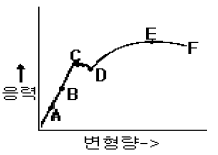
- B
- C
- D
- E
(정답률: 알수없음)
77. 베어링에 사용되는 구리합금의 대표적인 켈밋(kelmet) 성분은?
- 70% Cu - 30% Pb합금
- 70% Pb - 30% Sn합금
- 60% Cu - 40% Zn합금
- 60% Pb - 40% Zn합금
(정답률: 알수없음)
78. 금속표면에 초경합금 스텔라이트 등의 특수합금을 용착시키는 방전경화법은?
- Chromizing
- Hard facing
- Calorizing
- Sheradizing
(정답률: 알수없음)
79. FCC 결정구조를 갖는 금속에서 원자의 충전율(%)은?
- 36
- 68
- 74
- 80
(정답률: 알수없음)
80. 피복제에 습기가 있는 상태로 용접했을 경우 많이 일어날 수 있는 현상으로 다음 중 가장 중요한 것은?
- 오버랩 현상이 일어난다.
- 크레이터가 생긴다.
- 언더컷이 생긴다.
- 기공이 생긴다.
(정답률: 알수없음)